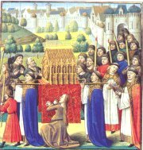
Náboženským hrám často předcházelo procesí věřících. V relikviáři jsou uschovány svaté ostatky.
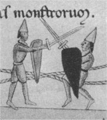
Nejsarší vyobrazení loutkového představení pochází z 12. století.
|
STŘEDOVĚKÉ DIVADLO
Středověké divadlo vzniklo z krátkých výstupů, které doprovázely křesťanskou bohoslužbu. Samotná mše svatá byla svébytným představením s pevně danou stavbou. Věřící se liturgie účastnili nejen jako diváci a posluchači, ale také přímo skrze svaté přijímání těla Páně (hostie). Jazykem bohoslužby byla latina, které přítomní často nerozuměli, důležité momenty proto byly ztvárněny vizuálně pomocí obrazů (křížová cesta), soch (světci) i divadelních výstupů. Nejstarší zápis takového výstupu pochází z Anglie z roku 975 po Kr.
Náboženské hry
Náboženské hry se předváděly přímo v kostele v době nejdůležitějších křesťanských svátků. V katedrálách byly umístěny mansiony (malé pavilony), ve kterých se konaly jednotlivé výstupy.
Velikonoční (pašijové) hry zpracovávaly poslední dny Ježíše Krista – jeho ukřižování a zmrtvýchvstání, velmi oblíbený byl výstup tří Marií u hrobu, Kristus se zjevuje Maří Magdaléně nebo apoštolové Petr a Jan u hrobu. Vánoční hry vycházely z událostí kolem Ježíšova narození – anděl zvěstuje pastýřům smysl betlémské hvězdy, klanění tří králů a zločin a trest krále Heroda.
V těchto liturgických hrách vystupovali výhradně kněží. Časem narůstala délka her i počet postav, a proto už nemohly být předváděny přímo v kostele v době bohoslužby, ale přesunuly se před vstupní portál. Od 12. století začínají v hrách vystupovat měšťané a další amatéři. Některé role byly ale velmi náročné, a proto je dostali na starost profesionální herci – žongléři.
|
Konec antického divadla
Vzrůstající vliv křesťanské církve znamenal konec antického divadla. Výstupy římských mimů byly příliš naturalistické a často už neměly s uměním nic společného. V roce 314 n.l. byli herci vyobcováni z církve (ve Francii toto nařízení zrušili až roku 1849) a v roce 671 n.l. koncil zakázal provozovat mimus a pantomimus v divadlech. Hry antických dramatiků se ve středověku neinscenovaly.
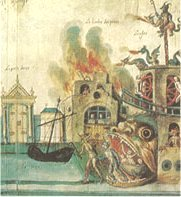
Mansionová scéna k pašijovým (velikonočním) hrám znázorňuje pekelný chřtán.
|
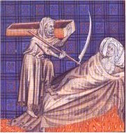
Ve středověkých moralitách často vystupovala Smrt.
|
Morality, mirakly a mystérie
Kromě liturgických dramat se hrály i další typy náboženských her – morality, mirakly a mystérie.
V moralitách vystupovaly alegorické postavy. Německá Hra o deseti pannách zpracovávala podobenství, ve kterém vystupovalo pět moudrých, pět pošetilých panen a Kristus jako ženich. Hlavní postavou hry Tanec smrti byla Smrt, kterou představoval herec v masce kostlivce. Oblíbenými postavami moralit byly Moudrost, Pravda, Neřest, Láska atd.
Základ miraklů tvořily různé zázraky známé z legend. Hlavními postavami byli světci (Hra o svatém Mikuláši), často v nich vystupovala i Panna Marie (Zázraky Panny Marie, Žonglér Matky Boží). Jednotlivé zázraky byly důmyslně jevištně zpracovány, aby bylo dosaženo co největší iluze opravdovosti (trikové kostýmy, rekvizity, loutky…).
Mystérie byly velmi výpravné cykly, při nichž se předváděl obsah celé Bible nebo jejích částí. Někdy trvaly až 40 dní. Počet postav šel do stovek, a proto v nich hráli především amatéři. Herci vystupovali na vozech, které přijížděly před diváky, nebo je diváci museli postupně obcházet.
|
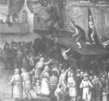
Divadelní představení
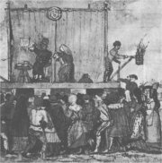
|
Žongléři
Žongléři byli všestranní herci, kteří museli ovládat akrobacii, žonglování, chození po provaze, polykání ohně a mečů, drezuru, iluzionistické triky, hru s loutkou, silácké triky atd. Původně hráli čerty.
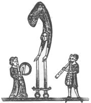
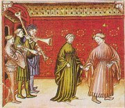
Hudebníci a tanečnice
|
Světské divadlo
Náboženské hry doplňovaly sólové výstupy žongléřů, které s vlastním dějem souvisely jen volně. Toto divadlo jednoho herce čerpalo náměty z rytířských, antických i komických příběhů. Žonglér přitom musel sehrát sám všechny role. Oblíbený byl výstup Mastičkáře, hry o rytířích krále Artuše, o Tristanovi a Isoldě, Rolandovi nebo Alexandrovi.
Blázniviny byly satirické hry, které předváděl amatérský spolek Bezstarostných dětí v Paříži (Pierre Gringoire: Hra o knížeti bláznů a bláznivé matce). Frašky (vycpávky) byly původně mezihry (interludia) v náboženských dramatech. Často šlo o velmi rozpustilé výstupy, které neměly s křesťanskými ideály nic společného (ve Vodě bláznů přistihne sedlák svou manželku s knězem). Není divu, že byly nakonec z kostelů vykázány...
Na panovnických dvorech se o zábavu starali šašci. Rytířské turnaje se změnily na velkolepou podívanou. Hojně navštěvovány byly i veřejné popravy.
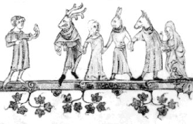
Světské divadlo vycházelo také z různých pohanských oslav, například průvodů masek.
|
Středověké zábavy
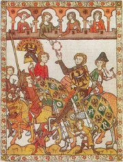
Šlechtic s hudebníky
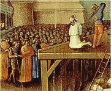
Veřejná poprava
|
České divadlo
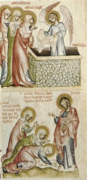
Tři Marie u Kristova hrobu
|
České divadlo
První náboženské hry inscenovaly jeptišky z kláštera sv. Jiří na Pražském hradě ve 12. stol. (Latinská hra velikonoční). Ze 14. stol. pochází česko-latinská Hra tří Marií a první česká hra Nářek Matky Boží. Žákovského původu je česká Hra o Kristově zmrtvýchvstání i jeho oslavení a výstup Dvě veselá kázání. Komedií byla rovněž Hra veselé Magdalény.
Mastičkář
Původně šlo o komickou mezihru (interludium), která byla součástí vážné Hry tří Marií. Marie jdou na tržiště, aby nakoupily masti na pomazání těla mrtvého Krista. Mastičkář Severín a jeho povedení pomocníci Rubín a Pustrpalk jim nabízejí své zboží. Fraška Mastičkář zesměšňuje typické postavičky středověkých trhů, podvodníky a hamižníky.
Rukopis Mastičkáře se dochoval ve dvou verzích (muzejní je uschován v pražském Národním muzeu, drkolenský v knihovně rakouského kláštera v Drkolné).
|
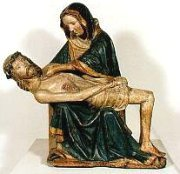
Pieta
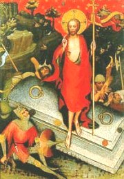
Zmrtvýchvstání Krista na obraze Mistra třeboňského oltáře
Na čem je založen humor Mastičkáře?
|
Internetové stránky
Medieval drama, informace
Mastičkář, celá hra
|
Doporučená četba
Černý, Václav: Staročeská milostná lyrika, Mladá fronta, Praha 1999 (Mastičkář)
Dějiny českého divadla, 1. díl
Hrabák, Josef: Staročeské drama, Praha 1950
Magnin, Charles: Dějiny loutkového divadla v Evropě, přel. N.Malíková, AMU, Praha 1992
Pujman, F.: Nejstarší české hry divadelní, Praha 1941
Staročeské drama, Československý spisovatel, Praha 1950 (Mastičkář...)
|
Připrav si referát o některé z uvedených knih nebo internetových stránek.
Sehrajte drama ve středověkém stylu.
|
|